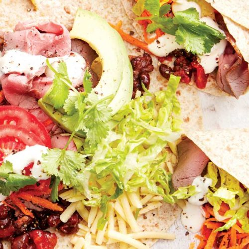

BEEFS

Roast beef and bean burritos
We've 'beefed up' the traditional burrito recipe by packing it with fibre-rich veg!
Serves: 4
Time to make: 15 mins
Hands-on time: 10 mins
Nutrition Info (per serve)
Calories : 450cal
Kilojoules : 1890kJ
Protein : 30.8g
Total fat : 14.9g
Saturated fat : 4.9g
Carbohydrates : 45.3g
Sugars : 10.5g
Dietary fibre : 11g
Sodium : 946mg
Calcium : 262mg
Iron : 4.1mg
Ingredients
400g can black beans, drained and rinsed
300g jar chunky tomato salsa
4 wholegrain tortillas
200g sliced cooked roast beef
2 medium carrots, grated
2 medium tomatoes, sliced
1 baby cos lettuce, shredded
1 avocado, sliced
50g reduced-fat cheddar, grated
Instructions
1. Add the beans and salsa to a saucepan and warm through for 3–4 minutes over medium heat. Roughly mash about half the beans with the back of a fork.
2. Wrap tortillas in foil and warm in the oven, or warm them in a sandwich press, or without foil in the microwave for a few seconds.
3. Lay tortillas out on a plate and fill evenly with roast beef, bean mix, carrots, tomato, lettuce, avocado and cheese. Wrap up and serve the burritos alongside any leftover salad.